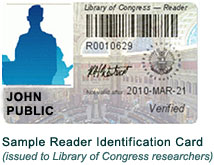

The Early Years: Thomas Jefferson's Impact on the Library of Congress
One of Jefferson's first acts in relation to the library was to make the Librarian of Congress a government-appointed position. The first person appointed this role was John J. Beckley, who received $2.00 a day in payment, which today would equal about $36.00. Beckley and subsequent librarians also served as clerk for the House of Representatives. The Library of Congress was burned during the War of 1812. To help rebuild the library, the government purchased Jefferson's private collection of nearly 7,000 books.
The Civil War Period and Beyond
The library caught fire again during the Civil War. Nearly all of Jefferson's collection and many of the books acquired since the War of 1812 were lost. This changed after the Civil War, as both the government and population expanded. Due in large part to efforts by librarian Ainsworth Rand Spofford, Congress began viewing the library as a national library.
What came next was a period of rapid expansion and growth for both the library proper and the collection itself. Making it a priority to house American publications and copyright registrations took up location there. By 1900, another building had been constructed to accommodate the much increased collection. It also had become the primary location for legislative documents and laws for the United States.
The 20th Century: Growth, Change, and Good Books
In the 20th century, the library continued to increase the amount of services and texts that it offered to the public and continued to maintain its commitment to nationalism by housing the Declaration of Independence as well as the Constitution. Since then, another building was constructed, the two older existing buildings were renovated and modernized, and in 2007 a new National Audio-Visual Conservation Center was constructed. In 2016, Carla Hayden was named the most recent librarian of Congress and is the first woman as well as the first African American to hold the position.
What is it?
The Library of Congress is the nation's oldest federal cultural institution and serves as the research arm of Congress. It is also the largest library in the world, with millions of books, recordings, photographs, maps and manuscripts in its collections and the world's largest collection of legal materials, films, maps, sheet music and sound recordings. The Library's mission is to support the Congress in fulfilling its constitutional duties and to further the progress of knowledge and creativity for the benefit of the American people.
Library of Congress Buildings
The Library of Congress is physically housed in three buildings on Capitol Hill and a conservation center in rural Virginia. The library's Capitol Hill buildings are all connected by underground passageways, so that a library user need pass through security only once in a single visit. The library also has off-site storage facilities for less commonly requested materials.
Thomas Jefferson Building
The Thomas Jefferson Building is located between Independence Avenue and East Capitol Street on First Street SE. It first opened in 1897 as the main building of the library and is the oldest of the three buildings. Known originally as the Library of Congress Building or Main Building, it took its present name on June 13, 1980.
John Adams Building
The John Adams Building is located between Independence Avenue and East Capitol Street on 2nd Street SE, the block adjacent to the Jefferson Building. The building was originally known as The Annex to the Main Building, which had run out of space. It opened its doors to the public January 3, 1939.
James Madison Memorial Building
The James Madison Memorial Building is located between First and Second Streets on Independence Avenue SE. The building was constructed from 1971 to 1976, and serves as the official memorial to President James Madison. The Madison Building is also home to the Mary Pickford Theater, the "motion picture and television reading room" of the Library of Congress. The theater hosts regular free screenings of classic and contemporary movies and television shows
Packard Campus for Audio-Visual Conservation
The Packard Campus for Audio-Visual Conservation is the Library of Congress's newest building, opened in 2007 and located in Culpeper, Virginia. It was constructed out of a former Federal Reserve storage center and Cold War bunker. The campus is designed to act as a single site to store all of the library's movie, television, and sound collections. It is named to honor David Woodley Packard, whose Packard Humanities Institute oversaw design and construction of the facility. The centerpiece of the complex is a reproduction Art Deco movie theater that presents free movie screenings to the public on a semi-weekly basis.
LOC's Collections
The library material classification system used is the Library of Congress Classification (LC Classification) which is also used by most specialized libraries and universities in the US.
All publishers in the US are required to submit two copies of their publications to the Library of Congress which is called mandatory. On weekdays, the library receives almost 22,000 new issues. Every day only about 10,000 publications are considered appropriate. According to the Library of Congress, the collection occupies a rack which when added together is 850 km in length. While the British Library has 625 km of shelves. The Library of Congress has around 130 million library materials, 29 million of which are books. On a website called American Memory, the Library of Congress provides millions of electronic documents, including images, photographs, audio recordings, videos and web page archives, all of which are public domains. THOMAS is a website for searching all documents produced by Congress that include: draft law, the text of the Congressional Record and its index, as well as the status and summary of the bill.
LOC's User
Open to the general public who want to do academic research, and there are tours available for interested visitors. Users need a "Reader Identity Card" to be able to enter the reading room and view collections. Users who are at least 16 years old can get the card at the Madison Building. The user's identity is proven by showing an identification card issued by the government (for example a driver's license, an identification card issued by the state, or passport). Collections in the reading room may not be taken outside the building or borrowed. Loans may only be made by members of Congress, US Supreme Court Justices, their staff, Congress Library staff, and other government agency officials.

Library's research areas, including Computer Catalog Centers, and Copyright Office public service areas are each required to have a Reader Identification Card.